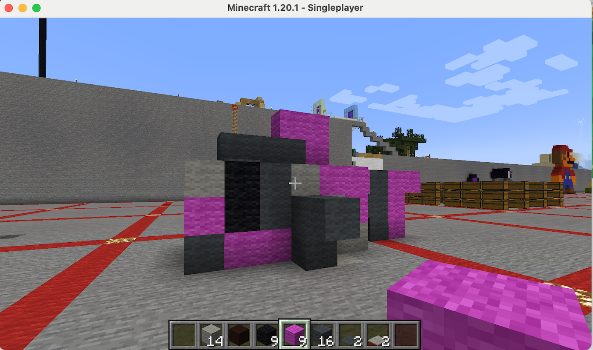
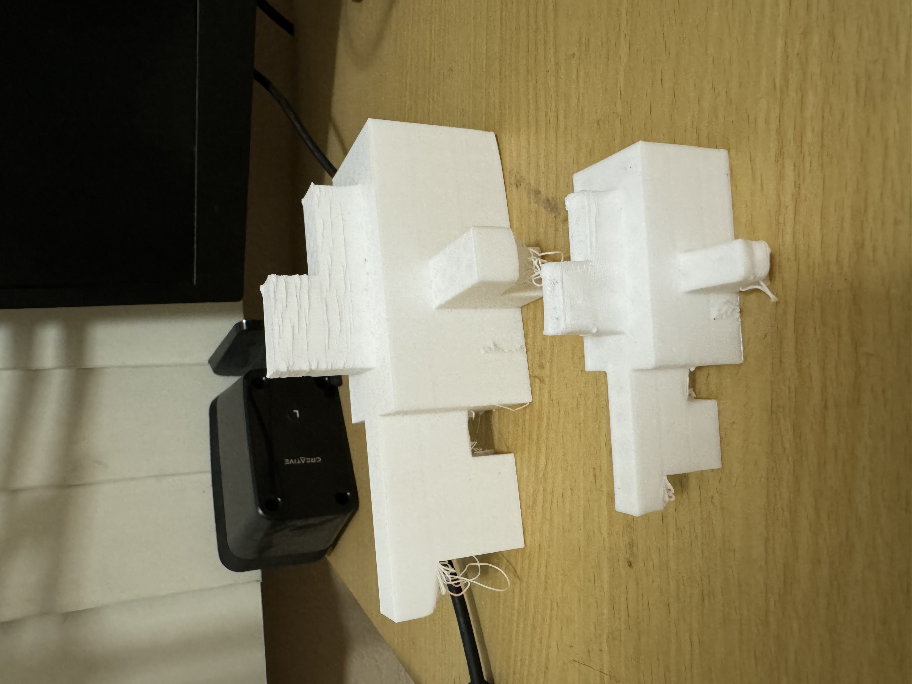
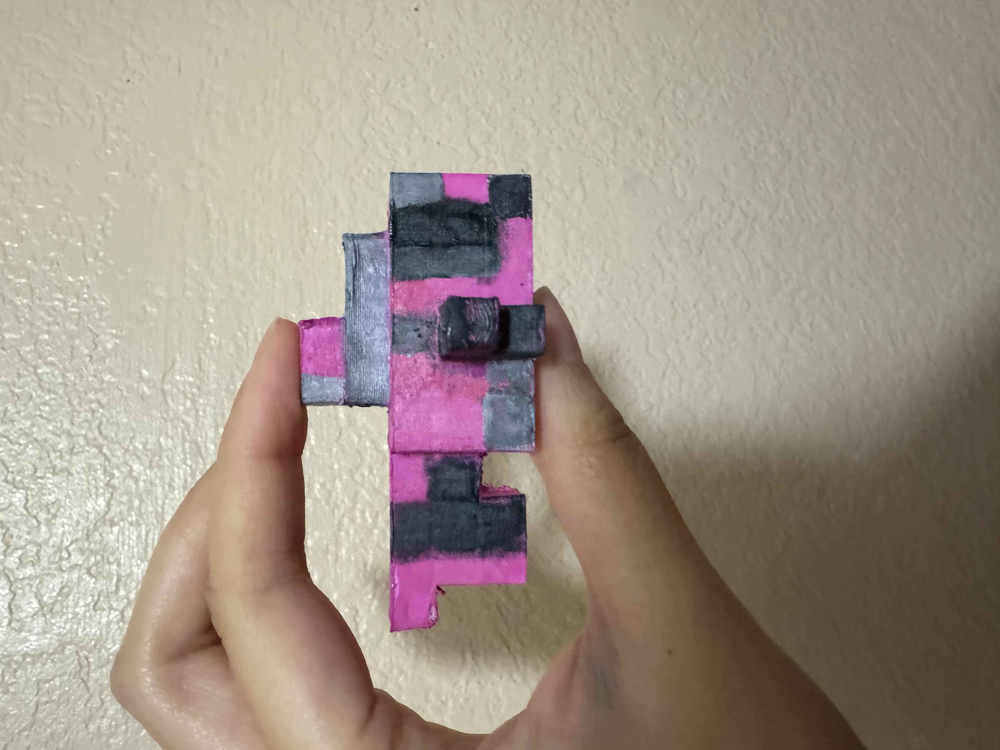
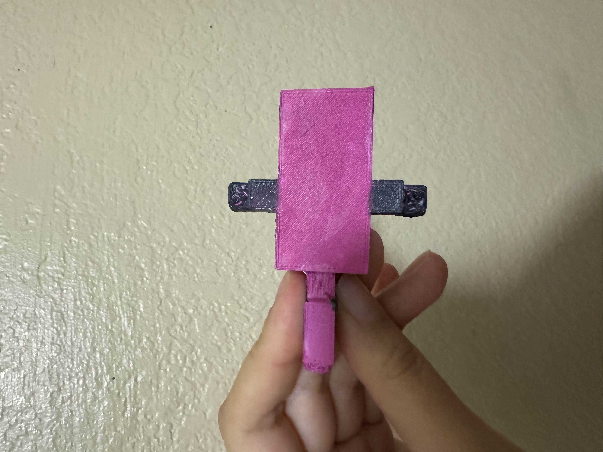

3D Art: Tropical Fish
Part 1: Tropical Fish on Minecraft


Part 2: Fish on FlashPrint
Part 3: Printing and PaintingBefore

After

The Back of the Fish

For my 3D printed artwork, I created a magenta and black tropical fish using MineCraft and Flash Print. I decided to have that as my concept because I used to be a fish owner when I was younger, however, I had trouble taking care of them properly and wish to go back and time to fix that. Unfortunately, they all died and I don't have the budget to own more fishes and materials for their homes in the future. So, I built a fish virtually as if it's like getting a new pet fish. The process started off with building it on Minecraft using simple magenta, black, and gray blocks to create the body, fins, and eyes. Then, I saved and published it onto MineWay, where I saved it as a fpp file. Afterwards, I uploaded it onto FlashPrint and sliced or increased the sizing of it. When I printed my first draft, it ended up being bigger than I thought, but it kept scaffolding a lot like spaghetti straps to the point it was ugly. So, I reprinted my final draft into a smaller version. Sadly, the scaffolding continued, so I cut them all up with my box cutter and painted them. Overall, I enjoy the virtual process and painting them, but the printing results can be better.